收录于合集
简 介
【作者】 季哲忱，中国政法大学政治与公共管理学院博士研究生
**【 编辑】**高嘉琳
【审校】 袁浩延、崔宇涵、高嘉琳
【来源】 《国际关系研究》2019年第1期
内容提要
中美贸易之间的失衡由来已久，而且根据美国商务部的统计，2017年中国是美国贸易逆差规模最大的国家，其逆差规模几乎等于美国贸易逆差国第2名至第10名逆差量之和。庞大的贸易逆差成为美国“民粹”总统特朗普上台后最优先急于解决的问题，并导致中美之间持续的贸易冲突。美国希望利用增加关税等贸易措施降低其贸易逆差的规模，不仅要打破贸易领域的失衡状态，更是要遏制中国经济的持续增长。作为中美共同的第一大贸易伙伴———欧盟，在这场冲突中的政策选择就变得至关重要。
【 关键词 】 中美贸易争端；欧盟贸易政策；重商主义；自由主义
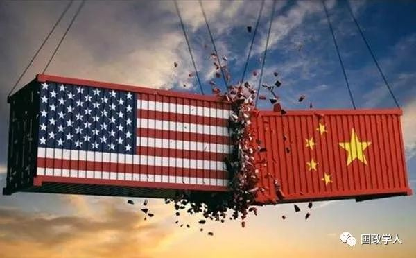
正文
**1
**
中美欧贸易现状及演变过程
在中美欧三方贸易关系中， 中国对其他两方全部为贸易顺差，美国对其他两方全部为贸易逆差，欧盟对美国为贸易顺差，对中国为贸易逆差 。依据世界海关组织2017年版《商品名称及编码协调制度的国际公约》(HS)1以及欧盟理事会发布的《综合税则目录》(CN)2对国际贸易中的商品分类，中国最大规模出口顺差商品为第16类第85章的电机、电气设备及其零件;录音机及放声机、电视图像、声音的录制和重放设备及其零件、附件(对欧盟出口968.03亿美元，对美国出口1348.79亿美元);美国最大规模出口顺差商品为第17类第88章的航空器、航天器及其零件(对中国出口157.57亿美元，对欧盟出口107.16亿美元);欧盟最大规模出口顺差商品为第17类第87章的车辆及其零件、附件(对中国出口301.52亿美元，对美国出口438.59亿美元)。
从 商品贸易结构角度 分析(见表1)， 中国对其他两方的贸易顺差中占据前 4 项的商品完全相同 。在中美贸易中，顺差前4项商品的合计顺差额占中美贸易总顺差额的77%;在中欧贸易中，这一数额更是占到了中欧贸易总顺差额的88%。在欧美贸易中，欧盟贸易顺差最大的前4项商品合计顺差额占到了欧美贸易中欧盟顺差总额的70%。但 相较于中国，欧盟对美国贸易顺差商品结构更加多元化 。
另一方面，从 历史趋势 看， 欧盟对中国虽然持续保持着大额的贸易逆差，但贸易逆差占贸易总量的比例并没有发生显著变化 。从2003年至2017年，欧盟对中国贸易总量从1680亿美元增长至大约6500亿美元，增长了近4倍，但贸易逆 差总量仅从750亿美元增长至2020亿美元，不足3倍。 贸易逆差总量的增长速度明显低于贸易总量的增长速度，最终使得逆差占贸易总量的比不升反降 ，从44%下降至31%，下降了13个百分点(见图1)。
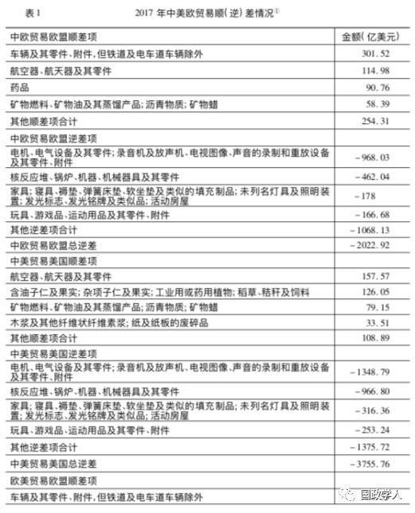
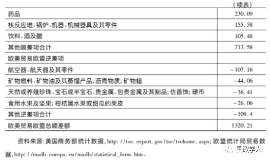
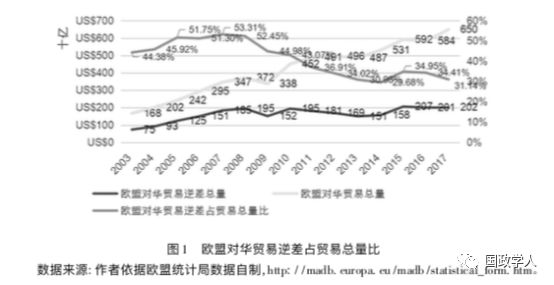
中美贸易中，中美贸易总量增长速度略大于美国对华贸易逆差总量 。从2003年到2017年，中美贸易总量从1808亿美元增长至6354亿美元，增长了大约3.5倍;逆差总量从最初的1241亿美元增长到了3756亿美元，增长了大约3倍。 贸易总量的增长速度比逆差总量的增长速度略高 ，逆差占贸易总量的比从69%下降到了59%，仅下降了10个百分点。 无论从逆差总量的绝对值还是逆差占贸易总量的相对值来说，中美贸易的不平衡程度都要大于中欧贸易 (见图2)。
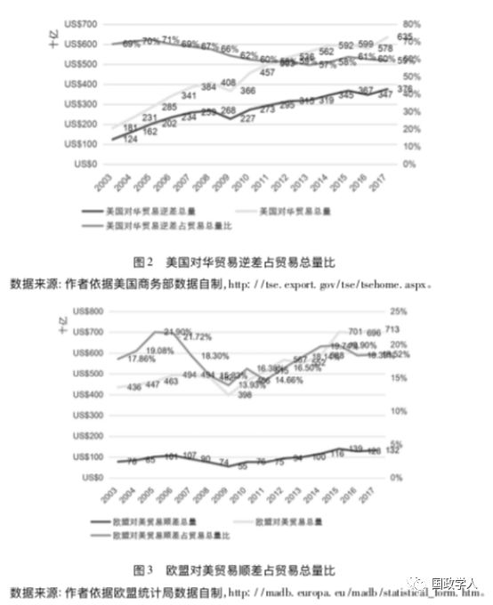
在欧美贸易中，欧美贸易总量增长速度和欧盟对美贸易顺差总量增长速度相同 。从2003年到2017年，欧美贸易总量从4360亿美元增长至6960亿美元，增长了1.5倍多;顺差总量从780亿美元增长至1320亿美元，也增长1.5倍多。顺差占贸易总量的比在15年间虽然存在上下波动，但总体平稳，从18%增长至18.5%，仅增长了0.5个百分点(见图3)。
总体而言，在 中美欧三方贸易关系中，中国拥有较大的贸易顺差，美国拥有较大的贸易逆差，而欧盟对美国的顺差额与对中国的逆差额相抵后的净逆差较小，贸易状况基本平衡 。在过去15年中，中欧贸易逆差规模缩减的速度要大于中美贸易逆差缩减的速度，这也预示着未来 中欧之间相对于中美之间，更有可能达到贸易平衡 。与此同时，欧美之间贸易顺差规模占比并未发生太大变化可能预示着 欧美贸易市场的供需接近平衡状态 。
**2
**
国际贸易中的自由主义与重商主义
在 国际政治经济学 中，解 释国际贸易相互依存与冲突的思想流派主要有贸易自由主义与重商主义两种 。重商主义思想最早起源于15世纪的欧洲，主张通过产业保护和国际贸易顺差使国家富强。这一思想在18世纪后期遭到自由主义学者的猛烈抨击，并失去了其主流国际贸易思想地位。第一次世界大战后及“大萧条”时期，随着自由主义思想主张的自由放任政策在各个国家和学术界受到极大冲击，重商主义政策又被学者和各国政府“再认识”。
二战之后，关于重商主义思想的研究逐渐分为了两派。一派认为重商主义是“ ** 恶性** ** (malevolent)** ”的并最终会导致国际冲突，就像其曾经成为引发第一次和第二次世界大战的主因之一一样;而另一派认为重商主义是“ ** 良性** ** (benign)”** 的并最终将使世界形成不同的利益集团进而实现均衡并维持和平。至此，重商主义思想已不再仅仅涉及经济问题，而且涉及关乎世界和平与冲突的政治问题。
正是在这一背景下，20世纪70年代发展起来的国际政治经济学对重商主义以及与其相对的自由主义进行了细致的研究。在 ** 吉尔平** ** (Robert Gilpin)** 的研究中，重商主义被认为是 政府为是其自身利益 (这种利益在国内社会中是经济增长，在国际社会中是国家安全) 最大化而干预经济的行为 。在吉尔平看来， 重商主义的实质便是政府政治目标的实现以及国家民族经济发展优先于全球经济效率的思想，而自由主义才是促成全球经济效率最大化的手段。
国际政治经济学的研究中可以看出， ** 自由主义思想** 认为在 经济相互依存与国际贸易冲突之间存在着负相关的关系，即国家之间相互依存度越高，发生大规模贸易冲突的可能性越小 。其原因在于，冲突的成本将随着相互依存程度的提升而提升，因此国家之间将会形成避免冲突发生的共识。与之相反的 ** 重商主义思想** 却指出，在 经济相互依存与国际贸易冲突之间存在着正相关的关系，即相互依存度越高越有可能发生贸易冲突 。其原因在于，国家在考虑国际贸易收益时，并不仅仅考虑从国际贸易中获得的直接收益，还要考虑国际贸易收支平衡状态造成的经济影响，以及由此产生的政治影响。
虽然这两种理论预示着截然不同的结果，但是其在本体论上有着共同的假设，即 国际贸易中的主体 ———国家，是寻求利益最大化的理性行为体。两种理论的分歧在于， 利益最大化对于国家的含义以及国家之间寻求利益最大化的博弈模式 。
** 贸易自由主义** 假设， 国家仅仅追求自身经济利益的最大化，并且只看重绝对收益，国家之间处于一种相互合作的正和博弈中 。也即是说，国家在国际贸易交往中只要是自身可以获得最大的经济利益即可，而交往对象获得的经济利益相比自身获得收益的多少并不重要。而 ** 重商主义** 假设， 国家在国际贸易中不仅仅追求自身经济利益最大化，同时还追求自身政治利益最大化，看重绝对收益的同时也看重相对收益 ，国家之间处于一种非合作的零和博弈中。
不同的假设和思想，意味着国家会采取不同的对外政策。在 ** 自由主义思想** 指导下采用的对外政策通常倾向于通过 国际组织、多边制度和国际法对国际社会进行管控并建立秩序 ；提倡国际政治生活的民主化，提高制度安排绩效，加强多边主义，扩大跨国社会行为体的参与权；对于国际社会面临的跨越国界的共同问题必须通过更深入的合作以及必要的干预进行治理与解决。而 ** 重商主义** 思想 强调产业经济的繁荣，提倡采用经济手段干预国家经济以及采取保护主义政策保护本国的商业和产业经济在世界经济体系中的地位 等等。
**3
**
** 美国对华贸易政策的最主要决定因素**
保罗 ·肯尼迪(Paul Kennedy)曾指出， ** 各国力量发展的不均衡带来了权力的更替和大国的兴衰，美国也无法逃脱这一规律** 。戴尔·科普兰(Dale C.Copeland)进一步认为， ** 衰弱中的霸权国更容易采用引发冲突的对外政策来稳固自身的安全，不会轻易的将霸权拱手相让** 。作为当今世界上的霸权国， ** 美国对外政策的首要目标是要保护其霸权地位，而其所有对外政策都是为这一目标提供服务的** 。随着中国的快速崛起，摆在美国面前的首要问题便是如何防止中国成为其强大的竞争对手。并且，霸权地位本身就是国际社会中的稀缺资源，一国影响力的提升往往意味着另一国影响力的下降，其竞争通常是 零和博弈 。二战后由美国一手创建的国际制度已无法遏制中国的崛起，中美之间的制度之争已然开始，因此，为了维持霸权，美国向现行的国际制度发起挑战并且采取重商主义贸易政策。
** 美国国内因素** 也是促使特朗普政府对华采取重商主义政策的诱因。据统计，自2000年以来有5000万个制造业岗位从美国流失。在高峰时期，有25%的美国人在制造部门就业，而目前这一数字只有8%。这使得这一议题成为2016年美国大选的核心议题。正是抓住了中下阶层选民的就业和经济问题，特朗普获得民众支持并取得大选胜利，在对外政策上他必然优先考虑中下阶层的利益。例如特朗普在大选中艰难取胜(与对手获得的选票数量几乎相同)的宾夕法尼亚州和密歇根州均为美国钢铁业密集地区，也成为特朗普钢铁和铝进口关税政策的受益者。更为重要的是，中国正在美国拥有传统优势的 ** 高科技领域** 加速追赶。美国美中经济与安全评估委员会2017年的报告重点强调，中国在技术领域的投资以及在一些核心领域已经超越美国或不相上下。2018年的报告重点强调，中国在物联网以及5G等未来核心技术方面已经具有优势。这些报告不断就中国在技术领域的进步向美国政府发出警告，认为中国的科技进步将对美国未来产业发展和国家安全带来威胁。
毕竟， 无论两国之间的贸易在国家利益中的定位有多重要，其也不会居于国家安全利益之上 。特朗普政府公布的首份《美国国家安全战略报告》已经认定中国和俄罗斯为美国国家安全的首要挑战者，提出美国要在印度太平洋地区通过政治、经济和安全等手段遏制中国的战略。并且，该报告中还明确将经济安全界定为国家安全，表示绝不容忍其他国家对美国的“经济入侵”和“不公正贸易”，要大力保护美国知识产权，维护美国的创新优势，强化外国对美国技术领域的投资审查，收紧技术签证政策，严防中国对美国知识产权和技术的“偷窃”。
为了实现其政策目标，美国还在国际贸易中积极寻找盟友共同遏制中国。2018年10月4日，美国总统首席经济顾问、白宫经济委员会主任库德洛(Larry Kudlow)在华盛顿经济俱乐部(Washington Economic Club)的演讲中表示，目前 ** 美国正在与欧盟和日本展开谈判，寻求建立一个针对中国的贸易联盟** 。同时， ** 美国同加拿大和墨西哥签署的最新自由贸易协定** ** (USMCA)** 特意增加了一个条款，即 ** 当协议中的某一方开始与非市场经济国家进行自由贸易谈判，如果其达成的结果中包含其他缔约方不希望看到的内容，则允许其他缔约方终止并替换美墨加贸易协定** 。
由此看来， 美国对华的贸易政策已经超越了国际贸易本身，成为了其整体对华遏制战略的一部分 。如重商主义假设的一样，美国不仅追求绝对利益，还关注相对利益，不光计算自身从国际贸易中获利多少，还要确保中国获利少于其获利，对自我经济的考虑已经超越了对全球经济效率的追求。从这一角度分析，中美之间的矛盾是 ** 霸权国与新兴大国** 、 ** 世界第一经济体与世界第二经济体之间争夺霸权地位的、不可调和的矛盾，因而美国对中国采用重商主义的贸易政策是必然结果。** 即使未来中美之间在贸易上达成一定程度的“妥协”，美国也不会放弃在全球经济中对中国的压制。
**4
**
** 欧盟对华贸易政策的最主要决定因素**
** 虽然欧盟一再重申支持自由贸易，但在实际行动中也出现了向重商主义偏转的迹象** 。例如，在2015年出版的欧盟贸易政策文件《所有人的贸易》中，欧盟 强调贸易政策将被用于在全球范围内推广人权和环境保护等欧盟关注的议题，并作为全球治理的重要手段 。最新的《欧盟贸易政策2016~2020》提到，国际贸易政策要服务于 对外推广欧盟的标准以及价值观 ， 并持续监控国际贸易中不公平的贸易行为以使得欧盟内部就业和经济可以免于受到不公平国际贸易的影响。 从中可以看出，欧盟在国际贸易中不仅仅是追求自由贸易而已。欧盟主席容克任期内的最后一次咨文也特意提到了欧盟的贸易政策立场正在发生改变。未来欧盟的贸易政策将在保持开放的同时“不再天真”，努力追求并维护欧盟的各项利益。
欧洲债务危机是欧盟保守贸易行为出现的触发因素 。欧洲债务危机之后，在欧盟内部关于全球自由贸易与欧盟自身经济恢复之间的关系越发趋于紧张。在欧盟的贸易政策制定中， ** 原本便存在着提倡自由贸易的 “北方”以及更加倾向于保护主义的“南方”两种态度**。欧债危机之后，基于对自身经济增长的担忧，这一分歧越发明显，使得欧盟在贸易政策制定中也出现了向保护主义偏转的趋势。一些学者甚至将这种转变称之为“软重商主义”。
在中美贸易冲突中，欧盟虽然不认可美国政府挑起贸易冲突的做法，但是却认同美国政府对中国的指责，即中国在知识产权保护以及强制技术转让等方面采取了“不公平”的贸易手段。同时在国有企业补贴和劳工权益等方面，欧盟也对中国提出了要求。
但即便如此，需要清楚认识的是， 欧盟在对华贸易政策中追求的仍然是绝对利益最大化，而不是关注相对利益的变化 。这是区别欧盟和美国对华贸易政策的最根本因素。其主要原因在于 ** 欧盟与中国之间并不存在霸权的竞争，也没有安全方面的焦虑** 。同时，在冷战结束之后， ** 欧盟面临的传统安全领域的威胁大幅降低，导致其在传统安全领域对美国的依赖减弱** 。因此，欧盟并没有参与美国遏制中国经济增长战略的意图，也并不在意中国在与其进行贸易时获得更多的利益。相反，欧盟希望中国经济的增长可以为其带来更大的市场空间。这可以从欧盟对华以及对美国贸易量最大的几个国家的贸易政策中发现。
德国、荷兰、英国、法国和意大利同时是与中国和美国贸易量最大的前5个欧盟国家，与中、美贸易量的总和分别占中欧贸易总量的72.5%和美欧贸易总量的69.4%。在贸易政策方面，这5个国家对中国的态度存在重大分歧。以给予中国市场经济地位这一议题为例，英国和荷兰持支持态度，法国和意大利持反对态度，而德国持中立态度。在这些国家中，对中国采取强硬贸易立场的国家是否有可能加入美国的“反华贸易联盟”呢?由于英国即将于2019年3月退出欧盟，下文将重点讨论其他4个国家在中美欧三方贸易博弈中的立场。
1. 德国与中国和美国的贸易结构
德国是与欧盟外国家贸易总量最大和外贸顺差最大的欧盟国家。在与中国和美国的贸易中，德国都保持着贸易顺差，其中，德国的小型机动车为最大的贸易顺差商品，具有较大的贸易优势。中国的手机、美国的能源类商品和农产品是德国从中美两国进口的主要商品。2017年，德国对中国拥有169.84亿美元的贸易顺差，对美国拥有756.71亿美元贸易顺差(见表2)。过去15年间，德国对中国在2011年由贸易逆差转为顺差后，顺差规模持续扩大，对美国的贸易顺差扩大了1倍以上(见图4)。
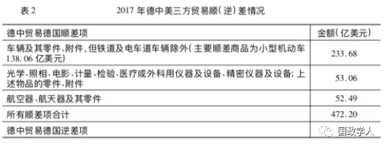
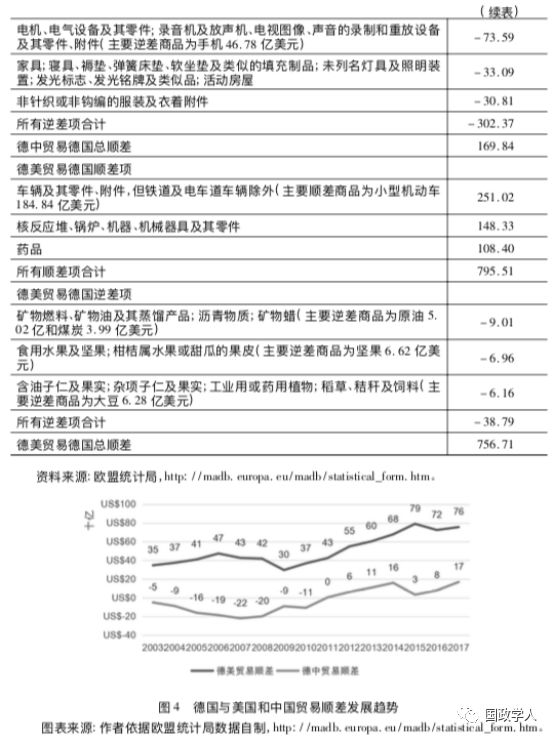
2. 荷兰与中国和美国的贸易结构
荷兰将在英国退出欧盟后成为与欧盟外贸易总量排名第2的欧盟国家。荷兰是一个经济高度依赖国际贸易的国家，2017年其外贸依存度高达148.4%。荷兰对中国和美国都维持着较大的贸易逆差，其主要原因在于荷兰的转口贸易发达，占到荷兰国际贸易总量的一半。转口贸易还导致荷兰对欧盟内国家贸易顺差较大，而对欧盟外国家贸易逆差较大。实际上，如果将欧盟内贸易计算在内，荷兰在欧盟成员中拥有仅次于德国的贸易顺差总量。
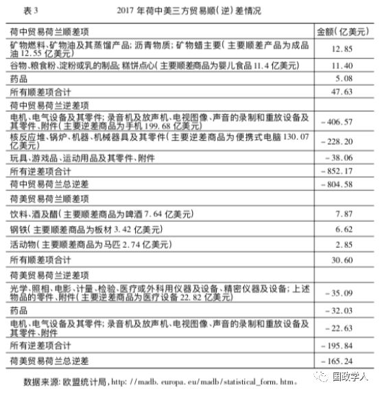
在荷兰与中国的贸易中，荷兰贸易逆差804.58亿美元，主要逆差商品是以手机和便携式电脑为主的电子商品。在与美国的贸易中，荷兰贸易逆差165.24亿美元，主要逆差商品为医疗设备(见表3)。过去15年内，荷兰对美国的逆差基本维持平稳，但对中国的逆差持续大幅扩大，即由2003年的150亿美元左右扩大到2017年的800亿美元左右(见图5)。最主要的原因在于中国成为全球电子商品最大的组装工厂及出口国家，同时欧盟内部对电子商品的需求持续增长。
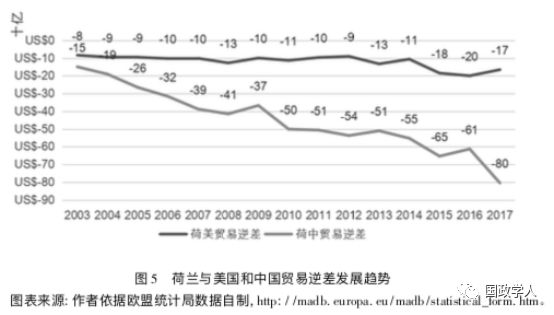
3. 法国与中国和美国的贸易结构
法国在与中国的贸易中持续保持着贸易逆差，其逆差规模由2003年的60亿美元左右扩大到了2017年的110亿美元左右，接近一倍。即使如此，在欧盟主要贸易国家中，得益于法国向中国出口飞机，其对中国的逆差总量仍然属于偏低状态(低于荷兰、英国、西班牙、意大利和波兰)。而在对美贸易中，法国贸易顺差额从50亿美元发展到一度趋近于平衡，2013年后又逐渐恢复到60亿美元左右，其主要顺差商品为农产品、药品及化妆品，主要逆差商品为飞机发动机和能源类商品(见表4、图6)。
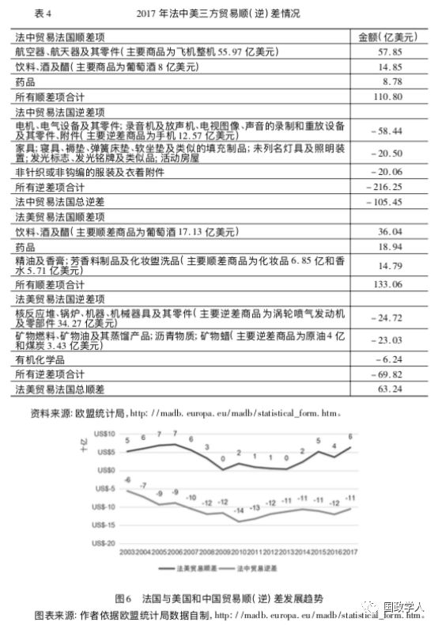
4. 意大利与中国和美国的贸易结构
意大利在意中贸易中的逆差规模从2003年的70亿美元左右扩大到了2017年的170亿美元左右，而在意美贸易中的顺差从2003年的130亿美元左右扩大到了2017年的290亿美元左右。对中国的逆差主要来自以手机为主的电子商品，对美国的顺差主要来自以小型电器为主的机器类商品以及小型机动车(见表5、图7)。
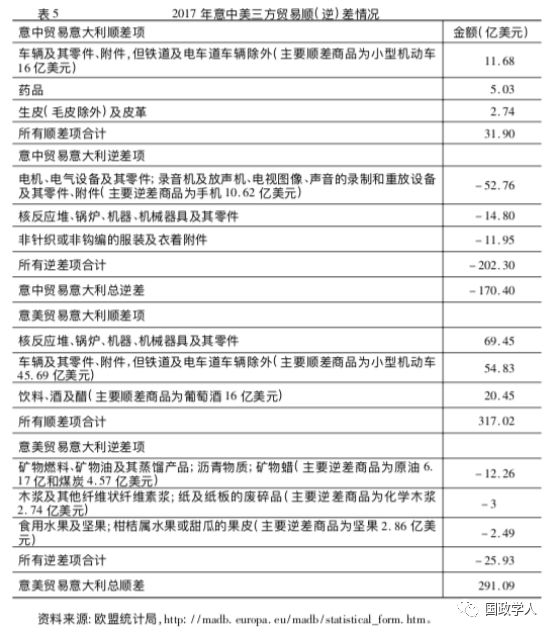
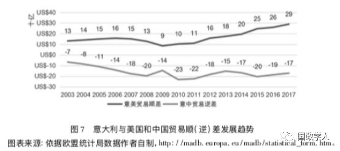
通过以上数据可以发现，在欧盟对外贸易总量较大的几个国家中存在3种情况: ** 对中美双方全部为贸易顺差的德国** ** ；** ** 对中美双方全部为贸易逆差的荷兰** ** ；** ** 对中国为贸易逆差，对美国为贸易顺差的法国和意大利。**
面对美国就中国问题对欧盟国家的拉拢，德国的立场比较“尴尬”。一方面，美国是其机动车出口的最大市场，目前也是其最大的贸易顺差来源；另一方面，中国市场的潜力极大，德国对中国贸易的顺差也在持续扩大。因此，在中美贸易冲突中，保持中立是德国最好的选择。然而，在美国总统特朗普与欧盟委员会主席容克2018年7月份达成的协议中，汽车关税被排除在外。美国有可能威胁对进口自德国的机动车增加关税，以换取德国加入其反对中国的阵营当中。在如果此种情况发生，德国将面对“两难”抉择，如何平衡中美双方以保护自身利益免受伤害将成为最棘手的问题。
鉴于其严重依靠国际贸易的国家经济结构以及对中美双方的贸易逆差，荷兰不存在被美国威胁的空间，而且是自由贸易的坚定支持者。因此，在美国试图拉拢欧盟对中国施压的过程中，为了维护自身的利益，荷兰将成为欧盟内部坚定的反对派。
法国目前与中美两国的贸易顺逆差规模都不大，因此在贸易政策选择上具有较高的灵活性。一方面，法国总统马克龙在巴黎举行的2018年经济合作与发展组织部长会议上做主旨发言时表达了反对“贸易战”和单边主义行为的主张；另一方面，他也表达了需要通过WTO改革和贸易规则修订解决世界贸易中的严重不平衡问题。目前全球贸易中顺差最大的国家是中国，因此法国提倡的改革自然也离不开解决中国贸易失衡的问题。总体而言，法国的贸易政策取决于其自身认可的国家利益能否实现，即自身能否在贸易中获得更多的利益。
目前意大利将主要精力集中在解决国内经济问题之上。意大利对美国拥有较大的贸易顺差，这对意大利目前解决国内经济问题至关重要。意大利总理孔特在2018年6月上任之后即出访美国，并在贸易领域获得了美国总统特朗普不会使意大利企业受损的保证。随后意大利多位部长密集访华，希望扩大与中国在金融、贸易以及投资等多个领域的合作，并希望中国可以在2018年底欧洲央行退出“货币宽松”政策后，支持意大利国债的发行，这对意大利目前急需解决的财政赤字和建立金融市场信心也至关重要。由此可见，意大利在中美贸易冲突中的政策也主要集中在自身如何能够获得更多的利益。
通过以上分析可以发现，欧盟的对外贸易政策虽然出现了一些重商主义的倾向，但基础仍然是自由主义思想，即追求自身绝对利益最大化。在对华贸易政策文件中，欧盟并没有将重点放在贸易逆差方面，而是要求中国进一步打开市场，为欧盟创造更多的市场机会。欧盟主要国家的贸易政策也不存在联合美国遏制中国的动机，更多的是关注绝对利益的获取。
5 结论与政策建议
通过分析发现， 虽然欧盟已将贸易政策当作向贸易对手施加影响的重要工具，但目前在对华贸易中仍然以追求自身利益最大化为目标 。在当前中美贸易冲突和欧盟正努力复苏经济的背景下，一方面， ** 欧盟需要美国这一最大贸易伙伴和最大贸易顺差来源国市场的支持，无法承担与美国的贸易冲突带来的消极后果** ；另一方面， ** 相比已经趋于饱和的美国市场，中国市场的未来对欧盟充满了吸引力** 。2006年版的欧盟对华贸易政策文件中曾指出，随着中国市场的开放以及购买力的提升，其市场空间巨大。欧盟不愿因贸易冲突失去在中国市场的机会。由此， 欧盟既关注与美国贸易获利的增减，也关注如何在与中国的贸易中获得更大的利益，其在中美贸易冲突中最好的政策选择就是保持中立 。有一些学者和智库建议的中欧联盟反对美国的贸易战略发生的可能性不大，同时美国试图拉拢欧盟遏制中国的努力也不会取得实质性的成果。但即使保持中立，也不意味着欧盟不会在一些领域对华采取贸易保护主义措施。此种类型的政策类似巴瑞布赞(Barry Buzan)所说的 ** 自由保护主义** ， ** 即在贸易自由主义与重商主义之间还存在着一定的政策空间，这一类政策将在世界贸易体系处于弱自由贸易系统中时被应用。**
为了提高欧盟采用保护主义政策的成本，中国可以考虑增加欧盟在中欧贸易中获得的绝对收益。 实现这一目标的一个可能领域是 农产品贸易 ， 因为这是欧盟可以从我国庞大的消费市场中获得更多收益的潜在贸易领域 。欧盟统计局发布的数据显示，美国是欧盟农产品最大的出口目的地，占其农产品出口额的16%，其后依次是中国(8%)和瑞士(6%)；欧盟进口农产品最大的来源地是巴西和美国(均占8%)，其后是挪威和中国(均占5%)。在欧盟内，德国、法国和意大利是农业生产和出口大国，但贸易数据显示欧盟内主要农产品出口国———德国、法国和意大利与美国的农产品进出口贸易已接近饱和。同时，农产品领域也是欧美自由贸易协定谈判中最敏感、最难达成共识的话题之一。与此相反，中国目前已成为全球最大农产品进口国，进口额占全球农产品贸易额的1/10，其中粮棉油糖肉奶等大宗农产品全面净进口，因此中国与欧盟在农产品领域的贸易空间巨大。而且，据欧盟委员会测算，在欧盟内每增加10亿美元的农产品出口，将支持1.4万个就业岗位。 中国增加来自欧盟的农产品进口将有效提升欧盟在中欧贸易中的收益，进而提高欧盟对华采取贸易保护主义政策的成本。
_ ** _ 本文由国政学人平台编辑**
更多阅读
【重磅速递】约瑟夫·奈：美国霸权的兴衰：从威尔逊到特朗普 | 国政学人
【重磅推荐】巴里·布赞：英国学派视角下的中国崛起 | 国政学人
【重磅速递】米尔斯海默：注定失败：自由主义国际秩序的兴衰 | 国政学人
【美国研究】IS杂志：为何美国的外交大战略如此稳定？| 国政学人
【英国脱欧】以欧盟为核心的多中心外交：脱欧后英国的欧洲外交战略 | 国政学人
【民族主义】江忆恩：中国的民族主义正在高涨吗？基于对北京群众的调查 | 国政学人